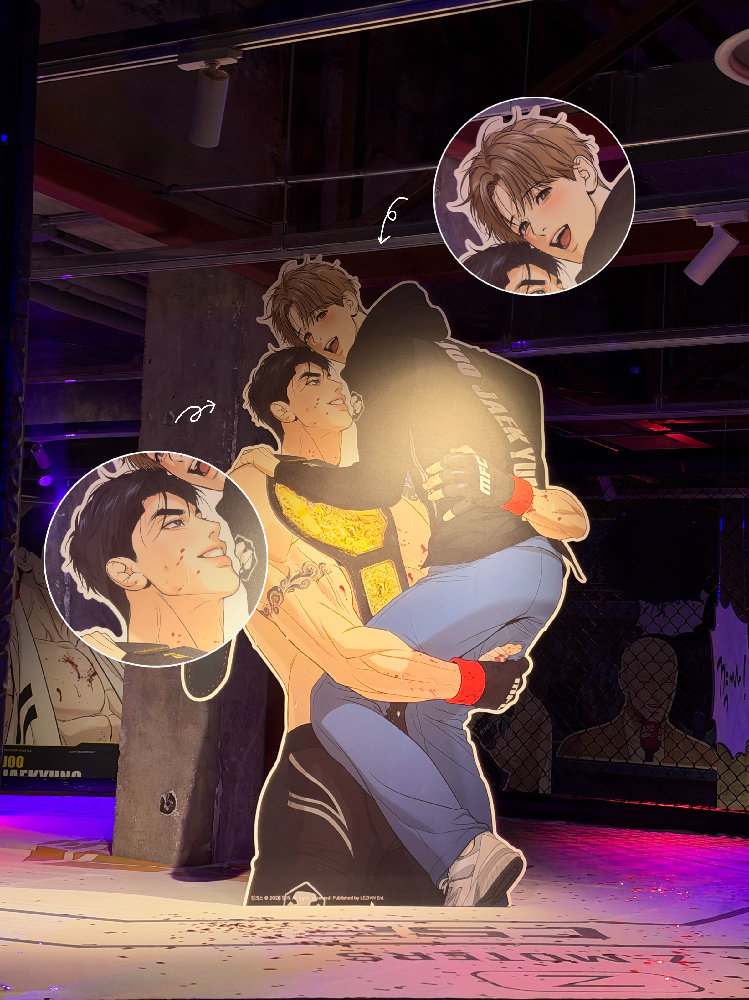
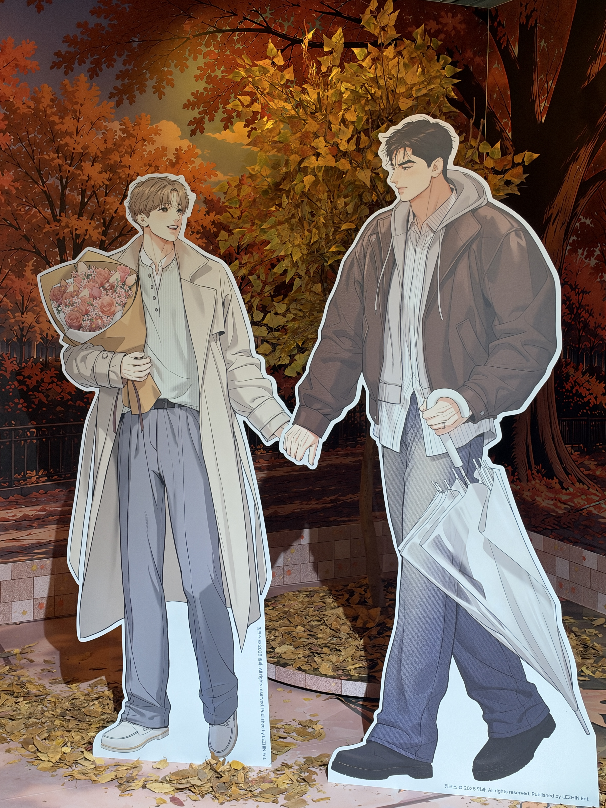

타이틀 방어에 성공한 순간. 케이지 문이 열리자마자 주재경(27)이 향한 곳은 옥타곤 구석이 아닌 전담 코너진 구역. 그곳에는 언제나처럼 그를 바라보며 서있던 물리치료사가 있었다.

주재경이 또 한 번 세계 정상의 자리를 지켜냈다. 하지만 이날 경기장의 진짜 명장면은 심판의 판정 선언 이후.
챔피언 벨트를 들어 올린 주재경은 망설임 없이 그의 물리치료사에게 다가갔다. 그리고 그대로 그의 허리를 감싸 안아 번쩍 들어 올렸다. 8각의 옥타곤 위, 챔피언의 품에 안긴 그의 얼굴은 빨개졌지만, 주재경은 그를 안은 채 케이지 안을 크게 한 바퀴 돌며 포효했다. 승리의 기쁨을 가장 가까운 곳에서 나눈, 완벽한 ‘공개 세리머니’였다.
‘재이미패치’가 두 사람의 핑크빛 기류를 포착한 것은 경기 수개월 전.

두 사람의 주요 데이트 코스는 성수동과 뚝섬 한강공원 일대. 고된 훈련이 끝나는 늦은 저녁, 두 사람은 한강공원에서 자주 목격됐다. 제법 싸늘해진 날씨에 버버리 코트와 자켓 등을 입고 손을 잡고 걸어가는 모습은 여느 평범한 연인과 다를 바 없었다.